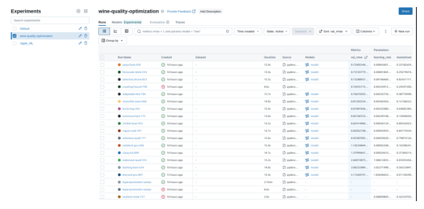
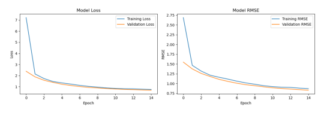

End-to-end Machine Learning (MLflow + Docker + Google cloud)
This is an account of my learning journey aided by this tutorial to grasp the nitty-gritties of buliding, logging, saving and serving machine learning models. First is a description of the development environment used.
Development Environment
I am running Debian 24.04 LTS, and Pycharm IDE calling Python 3.12 within a .venv virtual environment. Since the model used is a Tensorflow neural network, I had to follow cuda documentation in setting up necessary drives. You also need to start mlflow ui local server by running mlflow ui --port 5000 in the terminal, install dependenices pip install mlflow[extras] hyperopt tensorflow scikit-learn pandas numpy, and set environment variable export MLFLOW_TRACKING_URI=http://localhost:5000.
Step 1 : Data Preparation
The tutorial uses wine quality classification data.
# prepare data
import os
from dotenv import load_dotenv
import pandas as pd
import numpy as np
from sklearn.model_selection import train_test_split
from sklearn.metrics import mean_squared_error
import tensorflow as tf
from tensorflow import keras
import mlflow
from mlflow.models import infer_signature
from hyperopt import fmin, tpe, hp, STATUS_OK, Trials
# test prediction
import requests
import json
# environment variables
load_dotenv(".env")
MLFLOW_TRACKING_URI=os.getenv("MLFLOW_TRACKING_URI")
XLA_FLAGS=os.getenv('XLA_FLAGS')
# load data
data = pd.read_csv(
"https://raw.githubusercontent.com/mlflow/mlflow/master/tests/datasets/winequality-white.csv",
sep=";",
)
train, test = train_test_split(data, test_size=0.2, random_state=12)
train_x = train.drop(["quality"], axis=1).values
train_y = train[["quality"]].values.ravel()
test_x = test.drop(["quality"], axis=1).values
test_y = test[["quality"]].values.ravel()
# further split training data for validation
train_x, valid_x, train_y, valid_y = train_test_split(train_x, train_y, test_size=0.2, random_state=12)
# Create model signature for deployment
signature = infer_signature(train_x, train_y)
Define Model architecture
def create_and_train_model(learning_rate, momentum, epochs=10):
"""
Create and train a neural network with specified hyperparameters.
Returns:
dict: Training results including model and metrics
"""
# Normalize input features for better training stability
mean = np.mean(train_x, axis=0)
var = np.var(train_x, axis=0)
# Define model architecture
model = keras.Sequential(
[
keras.Input([train_x.shape[1]]),
keras.layers.Normalization(mean=mean, variance=var),
keras.layers.Dense(64, activation="relu"),
keras.layers.Dropout(0.2), # Add regularization
keras.layers.Dense(32, activation="relu"),
keras.layers.Dense(1),
]
)
# Compile with specified hyperparameters
model.compile(
optimizer=keras.optimizers.SGD(learning_rate=learning_rate, momentum=momentum),
loss="mean_squared_error",
metrics=[keras.metrics.RootMeanSquaredError()],
)
# Train with early stopping for efficiency
early_stopping = keras.callbacks.EarlyStopping(
patience=3, restore_best_weights=True
)
# Train the model
history = model.fit(
train_x,
train_y,
validation_data=(valid_x, valid_y),
epochs=epochs,
batch_size=64,
callbacks=[early_stopping],
verbose=0, # Reduce output for cleaner logs
)
# Evaluate on validation set
val_loss, val_rmse = model.evaluate(valid_x, valid_y, verbose=0)
return {
"model": model,
"val_rmse": val_rmse,
"val_loss": val_loss,
"history": history,
"epochs_trained": len(history.history["loss"]),
}
```
## Step 3: Set up parameter optimization
def objective(params): ““” Objective function for hyperparameter optimization. This function will be called by Hyperopt for each trial. ““” with mlflow.start_run(nested=True): # Log hyperparameters being tested mlflow.log_params( { “learning_rate”: params[“learning_rate”], “momentum”: params[“momentum”], “optimizer”: “SGD”, “architecture”: “64-32-1”, } )
# Train model with current hyperparameters
result = create_and_train_model(
learning_rate=params["learning_rate"],
momentum=params["momentum"],
epochs=15,
)
# Log training results
mlflow.log_metrics(
{
"val_rmse": result["val_rmse"],
"val_loss": result["val_loss"],
"epochs_trained": result["epochs_trained"],
}
)
# Log the trained model
mlflow.tensorflow.log_model(result["model"], name="model", signature=signature)
# Log training curves as artifacts
import matplotlib.pyplot as plt
plt.figure(figsize=(12, 4))
plt.subplot(1, 2, 1)
plt.plot(result["history"].history["loss"], label="Training Loss")
plt.plot(result["history"].history["val_loss"], label="Validation Loss")
plt.title("Model Loss")
plt.xlabel("Epoch")
plt.ylabel("Loss")
plt.legend()
plt.subplot(1, 2, 2)
plt.plot(
result["history"].history["root_mean_squared_error"], label="Training RMSE"
)
plt.plot(
result["history"].history["val_root_mean_squared_error"],
label="Validation RMSE",
)
plt.title("Model RMSE")
plt.xlabel("Epoch")
plt.ylabel("RMSE")
plt.legend()
plt.tight_layout()
plt.savefig("training_curves.png")
mlflow.log_artifact("training_curves.png")
plt.close()
# Return loss for Hyperopt (it minimizes)
return {"loss": result["val_rmse"], "status": STATUS_OK}
Navigate to your experiment → click on “wine-quality-optimization
Add key columns: click “columns and add:
Metrics | val_rmse
Parameters | learning_rate
Parameters | momentum
Interprete the visualization: blue lines - better performing runs; red lines - worse performing runs
Also take a look at the training curves:
import matplotlib.pyplot as pltimport matplotlib.image as mpimg# Specify the path to your image fileimage_path ="val_rmse.png"# Read the imageimg = mpimg.imread(image_path)# Display the imageplt.imshow(img)plt.axis('off') # Hide the axesplt.show()

# Specify the path to your image fileimage_path ="training_curves.png"# Read the imageimg = mpimg.imread(image_path)# Display the imageplt.imshow(img)plt.axis('off') # Hide the axesplt.show()

Step 6: Register your best model
To find the best run: in the table view, click on the run with the lowest val_rmse then navigate to model artifacts and scroll to the “Artifacts” section. then register the model:
- Go to "Models" tab in MLflow UI
- Click on your registered model
- Transition to "Staging" stage for testing
- Add tags and descriptions as needed
Step 7: Deploy the best model
Test your model with a REST API
# Serve the model (choose the version number you registered)
mlflow models serve -m "models:/wine-quality-predictor/1" --port 5002